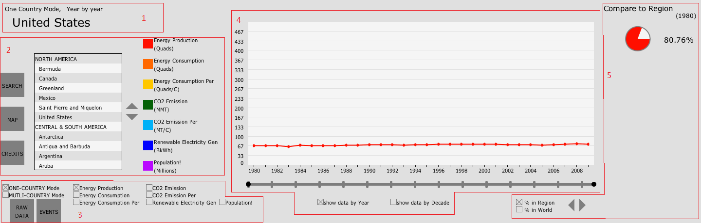
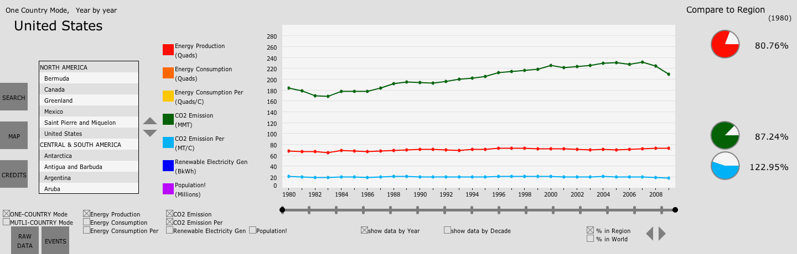
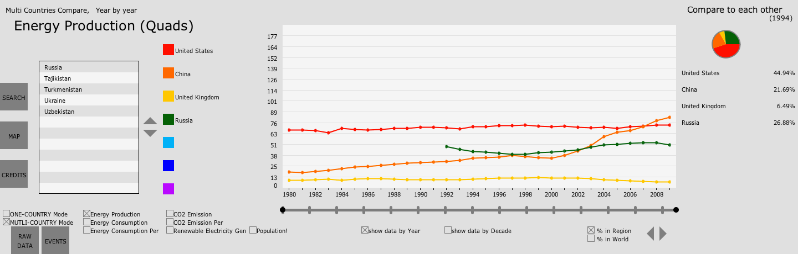
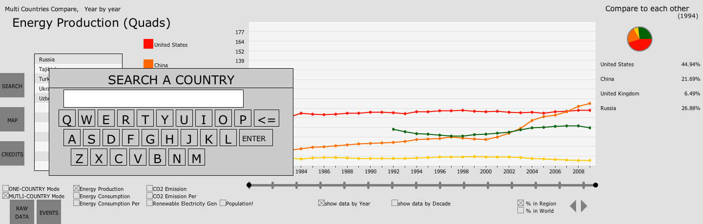
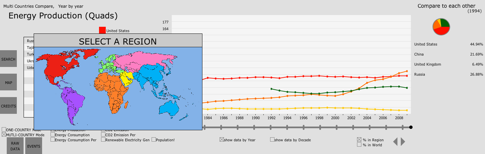
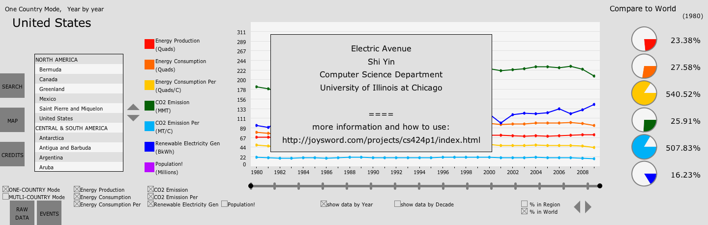
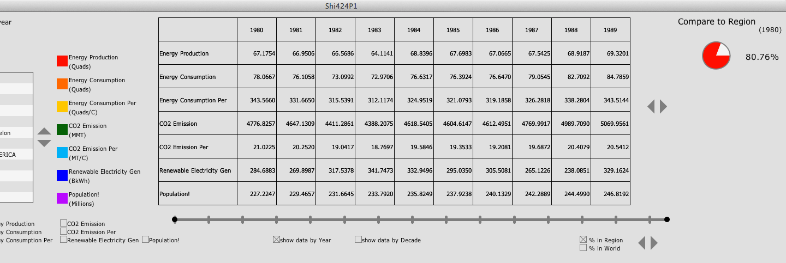
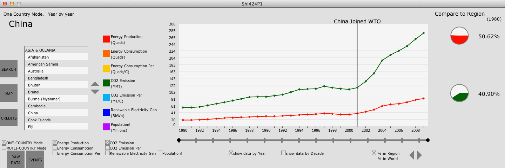
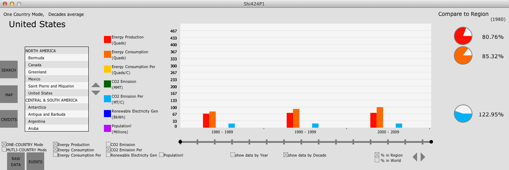
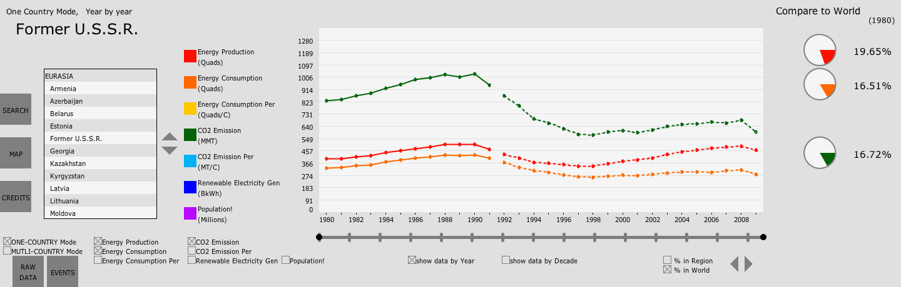

I would like to introduce the features of this app from left to right.

Fig.2 Layout of the interface
1. Title
Top-left area of the interface is displaying the title of current status. There are 3 statuses, Display Mode, which toggles between One Country Mode and Multi Countries Mode, Year Mode, which toggles between Year by Year and Decade Cluster, and Which country (in One Country Mode) or data (Multi Countries Mode) is being displayed.

Fig.3 One Country Mode

Fig.4 Multi Countries Mode
2. Left Panel
There are 3 buttons in the very left area:
- click SEARCH will oepn search window, which consists of a text box and a virtual keyboard. User can type a series of letters here then click ENTER, updating Country List to only displays only countries whose name initiates with the string user just typed.
- click MAP will open a world map, with different regions in different colors. User can click a region to update Country List to only displaying countries in that regions.
- click CREDITS will open a window that contains instruction and author credits.
To their right, are Country List and the Page Buttons for it.
*I put different colors to adjacent row to distinguish them.
*Regions and countries can be distinguished with no effort.
To it's right, are Legend, indicating which data or country are in which color in Plot.
*In One Country Mode, all 7 colors (i.e. data sets) will always be displayed; While in Multi Country Mode, user can delete countries from Plot by clicking it's name in Legend

Fig.5 SEARCH window

Fig.6 MAP window

Fig.7 CREDITS window
3. Main Controls
In this area, lying Country Mode Selector and Data Selector
As mentioned before, only one data set will be displayed in Multi Countries Mode so that user can focus on it and not be overwhelmed.
Below Country Mode Selector, there is a button RAW DATA which can be used to show Table of the data instead of Plot. This tabular form allows user who need accurate values to do more research on them.
Another button here is EVENT. This is for showing some international events and interesting findings I found using this application.
This is primarily integrated for this course. More information about this findings and events are at interesting findings section.

Fig.8 show RAW DATA in Table

Fig.9 show EVENT in Plot
4. Main Display
In this major area of the interface, is either Plot or Table.
*I used the maximum data value (excluding data for World) as the default maximum value for Y axis. If user drag their mouse (or finger) up and down, Y axis will be zoomed in or out. For this feature, many thanks to classmates who tested their project on the Wall on Thursday, September 20th, 2012. I watched and I learned.
*Another feature here is that in One Country Mode, there probably will be more than one data set in Plot simultaneously. By clicking the color square in Legend, user can choose to display Y values of which data sets.
Below it, is Time Line which is used to control which range of years to show in Plot
*This doesn't work in tabular form. In tabular form, user use Page Buttons to the right of Table to switch between decades.
User can also choose to see data in Decade Cluster mode which shows average data of whole decade as a Bar.
*Unfortunately, I separated data for 3 decades of the same data set and put data of different data sets for the same decade together, instead putting data for 3 decades of the same data set toghther, which, as I think now, would be better than what it looks like now.
*Note that in Decade Mode, some features may not be activated such as Event button and RAW DATA button. (Table will still show data Year by Year

Fig.10 cluster the data by decade
5. Comparison
In the right-most side of the interface, are some pie charts. Here, user can compare data of a country or region to Region or World in One Country Mode.
*Only one pie chart will be displayed, showing the relative amount of current data set for all countries that are showing in Plot or Table.
*For per capita data, color in Pie represents the country, white represents Region or World. For other data, color represents the country, whole Pie represents total amount of Region or World.
There also are Comparison Selector for switching between Region or World and another Page Button to select different year of data to be used.
*For years in which some data of some country that is not available, 0 will be used instead giving N/A information.
See Fig.3 and Fig.4
6. Other features
In One Country Mode, this app deals with countries that break up or form intelligently.
*I only implement suck countries in Europe and Eurasia, other countries such as Namibia of Africa, Palestine of Middle East, Eritrea of Africa and East Timor of Asia & Oceania.
*If user choose a big country that breaks up or be formed, this app will show the sum of data of small countries for years in which the data of the big country is not available;
*If user choose a small country that merge with other country or is fromed by a collapsed big country, this app will show the data of the big country for year in which the small country is not the small country.

Fig.11 Intelligently dealing with country that breaks up